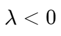

随机变量和离散分布
随机变量
对于一个样本空间 S，有样本点
存在一个 real-valued function X 使得 ，这里的 X 即为随机变量,,
随机变量分为离散型随机变量和连续型随机变量。顾名思义，离散型随机变量表示随机变量的值是离散的，连续型随机变量表示随机变量的值是连续的。
- 离散型随机变量：变量个数是有限个或者无限可列个【关键是可列】
- 非离散型随机变量：变量个数是无限不可列个。非离散型中特殊的一种是连续型，即随机变量处处连续。
概率分布函数,,
给出一个随机变量 x，求其落在某区间 内的概率
分布函数有如下特性：
- Nondecreasing:
- Bounded:
- Continuity from the right:
概率到概率分布函数的转换
对于 ，有：

概率质量函数,,
其实概率质量函数值即为概率在该点的变化率。
离散分布
伯努利分布,,
x 取值范围只有 0 和 1，（成功或失败）。
记作
对于伯努利分布，有分布函数：
二项分布,,
进行 n 次实验，每次实验成功概率为 p
记作
泊松分布,,
在一个固定的时间或空间区间内某一事件发生的次数，比如在一段时间内的网站点击率、放射性衰变数、电话呼叫到达次数等。λ 表示单位时间或空间内事件发生的平均次数。
对于 ，记作
笔记
如果一个二项分布的试验次数 n 很大而成功的概率 p 很小，则可以把 np 近似看作
，用泊松分布来近似二项分布以减少计算量。